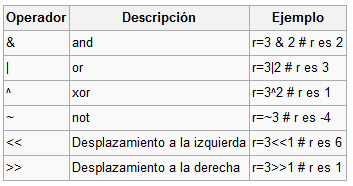

Tarea 4
PYTHON
SÍMBOLOS
SINTAXIS
Reglas Generales de la Sintaxis de Python
La sintaxis de Python se rige por una serie de Reglas Generales que sirven para dar orden, coherencia y limpieza al lenguaje.
Un programa escrito en Python se divide en un número determinado de líneas lógicas, cuyo final está determinado por el token o señal de nueva línea (NEWLINE).
De esta forma, se va organizando el código, siguiendo reglas sintácticas fundamentales que constituyen la Estructura Lexicográfica del lenguaje y que gobiernan la forma en la que escribes un programa en Python.
Líneas Físicas vs Líneas Lógicas
Las líneas físicas son secuencias de caracteres que
concluyen con el caracter de fin de línea (\n en sistemas Unix-Like o \r\n en Windows).
Nota: Las líneas físicas en la práctica no son más que las líneas que enumera tu editor de código.
Las líneas lógicas por su parte, son componentes lógicos de la sintaxis de Python, cuyo final está determinado por el token o señal de nueva línea (NEWLINE). Este token determina el fin de una línea lógica y da comienzo de otra.
Una línea lógica puede estar compuesta por una o varias líneas físicas de un archivo de texto plano.
Las líneas físicas se pueden unir para formar una única línea lógica para
lo cual puedes emplear el caracter de barra invertida \
colocado como caracter de escape justo antes de la secuencia de fin de
línea. Este proceder se denomina Unión Explícita de Líneas
y es considerado como una mala práctica y generalmente debe evitarse, pero
aún así, es sintácticamente legal hacerlo.
Uno de los riesgos que implica este tipo de unión de líneas físicas, es que
por error incluyas, por ejemplo, un caracter de espacio inmediatamente
detrás del caracter \, lo cual constituye un error sintáctico
que puede ser difícil de encontrar. Por suerte, la mayoría de los editores
e IDEs actuales incluyen la opción de eliminar automáticamente los
caracteres de espacio al final de las líneas físicas. Un ejemplo de unión
explicita es:
# Una línea lógica muy largaaaaaa
circle_area = math.pi * radius ** 2.0 if radius > 0.0 and radius != float('inf') \
else None
Las líneas físicas también se pueden unir en una única línea lógica,
empleado los pares de caracteres (), [] y{}. Esto se conoce como Unión Implícita de Líneas.
Si una línea lógica se inicia con un paréntesis (, se
extenderá por tantas líneas físicas como sea necesario y solo terminará con
el caracter de cierre, es decir, ). Esto también se cumple
para los corchetes [] y las llaves {}.
La unión implícita es la forma recomendada y generalmente empleada por la mayoría de los programadores con experiencia en Python. Un ejemplo de este tipo de unión de líneas físicas podría ser:
>>> print(
... 'Hello',
... 'World!'
... )
Hello World!
Sentencias Simples y Compuestas
Existen dos tipos de sentencias en Python:
- Las sentencias simples , que deben completarse en una única línea lógica, como por ejemplo:
>>> from sys import platform
-
Las sentencias compuestas
, que deben comenzar con una cláusula de sentencia compuesta y deben
contener sentencias simples y/o compuestas indentadas, a las cuales se
les suele llamar cuerpo o bloque. La cláusula inicial o encabezado de
una sentencia compuesta inicia siempre con una palabra clave (keyword) y termina con el caracter de dos puntos
:. Por ejemplo:
>>> if a > b:
... print(a, 'is greater than', b)
A diferencia de otros lenguajes, Python no tiene declaraciones u otros elementos sintácticos de alto nivel, solo sentencias, que generalmente ocupan una o varias líneas físicas en tu editor.
El fin de una línea física, generalmente determina el fin de la mayoría de
las sentencias. Las líneas físicas terminan con la secuencia de fin de
línea \n (En Windows se acepta \r\n):
>>> var = 'Welcome to Python Scouts!' # Línea física que termina con la secuencia de fin de línea \n
>>>
Además, es válido emplear el caracter punto y coma ; para
terminar las sentencias:
>>> print(var); # Sentencia que termina con ;
Welcome to Python Scouts!
O para incluir varias sentencias simples en una mima línea física:
>>> var1 = 0; var2 = 1 # Empleo del ; para separar dos sentencias en una misma línea física
>>> var1
0
>>> var2
1
El empleo del ; para separar varias sentencias en una misma
línea física es considerado una mala práctica, pues atenta contra la
legibilidad del código y no se apega al estilo de codificación aceptado en
Python, por tanto, se recomienda evitarlo.
Indentación
Python, a diferencia de otros lenguajes, no emplea llaves {} o
estructuras begin...end para definir bloques de código. Para
esto, el lenguaje se vale de lo que se conoce como indentación, que no es más que la inclusión de espacios o
caracteres de tabulación al inicio de las líneas lógicas.
La indentación del código tiene su origen en la necesidad de hacer que el código sea más legible y comprensible. Esta es la razón fundamental por la cual Python la hace parte de su sintaxis, esencialmente para mejorar la legibilidad, comprensión y sencillez del código, que es sin dudas, uno de los rasgos identificativos y más valorados del lenguaje.
Las sentencias pueden ser agrupadas dentro de una cláusula o cabecera ( header) de sentencia compuesta mediante la indentación.
Python usa la indentación de las líneas lógicas, para determinar la agrupación de sentencias y su pertenencia a determinado bloque o cuerpo de sentencia compuesta. Por ejemplo:
def printer():
# Los espacios al inicio de estas líneas forman la indentación
print('Hello World!')
print('Welcome to Python Scouts!')
# Las sentencias anteriores forman el bloque o cuerpo de la función printer()
printer() # El llamado a printer() queda fuera del bloque, pues ya no hay indentación
Como ya sabes, la indentación puede definirse con caracteres de espacio (se recomienda el empleo de 4 espacios, que es considerado el estilo óptimo de Python) o de tabulación. Es recomendable no mezclar ambos tipos de caracteres en un mismo fragmento de código.
La indentación debe ser la misma (igual cantidad de espacios), al menos para las líneas que componen un mismo bloque de código y la primera sentencia de un archivo de código no debe tener indentación.
Como ves, la indentación es un componente sumamente importante en la sintaxis de Python.
Comentarios
Un comentario es una secuencia de caracteres que comienza
con el caracter de numeral # y continúa hasta el fin de la
línea física.
Las líneas físicas que comienzan con # son ignoradas
completamente por el intérprete de Python. En realidad estas líneas están
dirigidas a los programadores/mantenedores/clientes del código, que en
muchas ocasiones serás tú mismo.
Los comentarios son útiles para indicar lo que estas haciendo y sobre todo por qué lo haces, siempre y cuando no sea algo obvio, en cuyo caso resultan redundantes y superfluos. Por ejemplo:
>>> # Esto es un comentario que comienza con # y es ignorado por Python
>>>
>>> # Le asigno el valor 0 a count <= Esto es un comentario innecesario
>>> count = 0
>>>
>>> # Inicializo count a 0 para contar las veces que... <= Mejor
>>> count = 0
Existe un tipo especial de comentario denominado declaración de codificación (encoding declaration ), que se incluye en la primera o segunda línea de un módulo o script Python para declarar explícitamente la codificación del texto contenido en el archivo. Un ejemplo de este tipo de declaración es:
1 2 3 |
# -*- coding: utf-8 -*- # La declaración de codificación se coloca en la primera o segunda línea del módulo |
En la mayoría de los casos, este tipo de declaración no es necesaria, pues
casi todos los IDEs y editores de texto manejan esto de forma transparente.
En el caso de los módulos de Python 3.x, el estándar de codificación es el UTF-8, mientras que en la rama 2.x del lenguaje, el estándar
suele ser ASCII.
Finalmente, en muchas ocasiones incluirás en tu código un tipo de comentario que se denomina comentarios en linea ( in-line comments). Se trata de un comentario que escribes a continuación de una sentencia o expresión. Por ejemplo:
if temperature <= 273: # Validar la temperatura <= Comentario en línea
raise ValueError('Wrong temperature value')
Cuando unes las líneas físicas mediante el mecanismo de unión implícita que viste con anterioridad, puedes incluir comentarios en linea, como por ejemplo:
month_names = ['January', 'February', 'March', # Primer trimestre
'April', 'May', 'June', # Segundo trimestre
'July', 'August', 'September', # Tercer trimestre
'October', 'November', 'December'] # Cuarto trimestre
Espacios y Líneas en Blanco
Los espacios en blanco pueden ser empleados libremente en el interior de las sentencias (entre tokens). A excepción del inicio de línea, donde los espacios se interpretan como indentación y determinan la pertenencia de una sentencia simple a una compuesta.
Las líneas en blanco, contienen solo caracteres de espacio, tabulación y fin de línea. Su empleo está estrechamente ligado a la legibilidad del código.
Por otro lado, si estás en una sesión interactiva del intérprete o Ciclo de Lectura, Evaluación, Impresión (REPL por sus siglas en Inglés), una línea en blanco representa la conclusión de una sentencia compuesta.
Existen recomendaciones bien establecidas en el PEP 8 con relación al empleo de espacios y líneas en blanco y es aconsejable que las sigas a fin de que tu código presente la apariencia de un código Python bien escrito.
Tokens del Lenguaje
Los tokens son componentes lexicográficos elementales que forman cada una de las líneas lógicas. En la sintaxis de Python se reconocen los tokens o señales siguiente:
- NEWLINE : determina el fin de una línea lógica y el comienzo de otra
- INDENT : indentación de las sentencias dentro de una sentencia compuesta
- DEDENT : fin de indentación que determina el fin de una sentencia compuesta
-
Identificadores
(identifiers): nombres que identifican a variables, funciones,
clases, métodos, constantes, módulos, paquetes, etc. Los
identificadores comienzan con letras (
A – Z,a – z) o con guiones bajos (_), seguidos de cero o más letras, guiones bajos o dígitos (0 – 9). Python es un lenguaje Case Sensitive, lo que significa que las letras mayúsculas son distintas de las minúsculas -
Palabras clave o reservadas
(keywords): palabras con significado especial para el
lenguaje, que no pueden ser empleadas como identificadores. Algunas
palabras clave son sentencia simples (Ej.
break,continue), otros, cláusulas de sentencias compuesta (Ej.def,class,for,while), mientras que otras son operadores (Ej.and,or,is,in). Las palabras reservadas de Python se pueden consultar tecleando en el prompt intérprete, las sentencias siguientes:
>>> import keyword
>>> keyword.kwlist
['False', 'None', 'True', 'and', 'as', 'assert', 'break', 'class', 'continue',
'def', 'del', 'elif', 'else', 'except', 'finally', 'for', 'from', 'global',
'if', 'import', 'in', 'is', 'lambda', 'nonlocal', 'not', 'or', 'pass',
'raise', 'return', 'try', 'while', 'with', 'yield']
- Literales (literals): valores numéricos o de cadena de caracteres que aparecen directamente escritos en el código. Por ejemplo:
>>> 'Hello World!' # Literal de string
'Hello World!'
>>> 1452.25 # Literal de float
1452.25
>>> 15 # Literal de int
15
>>> 1_000_000 # Literal de int con guión bajo de agrupación (versión 3.6)
1000000
- Operadores (operators): caracteres empleados para denotar operaciones diversas tales como: aritméticas, lógicas, de asignación, etc. Los operadores actuales del lenguaje son:
+ - * ** / // % @
<< >> & | ^ ~
< > <= >= == !=
- Delimitadores (delimiters): caracteres empleados para delimitar literales, líneas lógicas, entre otras. Python incluye los delimitadores siguientes:
( ) [ ] { }
, : . ; @ = ->
+= -= *= /= //= %= @=
&= |= ^= >>= <<= **=
Todos estos elementos y algunos otros más, forman parte de la sintaxis de Python, y los emplearás en mayor o menor medida en tu código.
ESQUELETO DE LOS PROGRAMAS
APLICACIÓN A DESCARGAR PARA EDITAR Y EJECUTAR
Python 3.7 (Intérprete)
Para editar código, pueden usarse cualquiera de los IDEs como Sublime Text, Spyder, PyCharm, Visual Studio Code, etc.
A QUE TIPO DE PARADIGMA PERTENECE
MULTIPARADIGMA
-Orientado a Objetos
-Programación imperativa
-Programación funcional